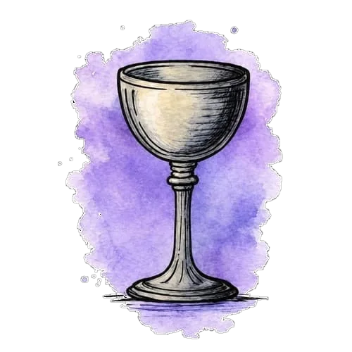

A POLARIS ENGINEERING COLLECTIVE
CUPS
THE SOFTWARE ENGINEERING TEAM OF POLARIS
Four engineers, one standard: software that holds up in production.

ENGINEERED WITH INTENTIONSCROLL TO EXPLORE
A POLARIS ENGINEERING COLLECTIVE
THE SOFTWARE ENGINEERING TEAM OF POLARIS
Four engineers, one standard: software that holds up in production.

The engineers of Cups
Systems designed, built and shipped by Cups